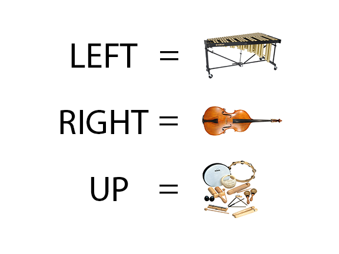

<html>
<head>
<title>Soundscape</title>

<script>
           
// Examples from here:
//http://docs.webplatform.org/wiki/tutorials/intro_web_audio_api_2
//http://www.html5rocks.com/en/tutorials/webaudio/intro/#toc-context
      
var context;
function initContext() {
  
  // We only want chrome suppoted in this project
  
  // please note, that IE11 now returns true for window.chrome
  var isChromium = window.chrome;
  var vendorName = window.navigator.vendor;
  if(isChromium !== null && vendorName === "Google Inc.")
  {
    // is Google chrome 
    try {
      context = new webkitAudioContext();
      document.write("<table align='center'><tr align='center' width=80%><td>");
      document.write("- Press the key on your keyboard that corresponds to an instrument.<br>");
      document.write("- Notes are chosen randomly from a chord.<br>");
      document.write("");
      document.write("</td></tr></table>");
    }
    catch(e) { // webkit didn't load
      alert('Your browser does not support the Web Audio API - update your version of Chrome.');
      document.write("<div align='center'>Your browser does not support the Web Audio API - update your version of Chrome.</div>");
    }
  } 
  
  else  { 
   // not Google chrome
    alert('This project is only suppored on the Google Chrome Web Browser.');
    document.write("<div align='center'>This project is only suppored on the Google Chrome Web Browser.</div>");
  }
  
}

////////////////////////////////////
// VIBES
////////////////////////////

var myVibeBufs = [null, null, null, null];
var myVibeURLs = ["vibe_c.mp3", "vibe_lo_c.mp3", "vibe_g.mp3", "vibe_a.mp3"];

function load_vibe_notes()
{
    for (i=0;i<myVibeBufs.length;i++)
    {
        load_vibe(i);
    }
}

function load_vibe(i) {
  var request = new XMLHttpRequest();
  request.open('GET', myVibeURLs[i], true);
  request.responseType = 'arraybuffer';
  request.onload = function() {
    context.decodeAudioData(request.response, function(buffer) {
      myVibeBufs[i] = buffer;
    });
  }
  request.send();
}
 
////////////////////////////////////
// BASS
////////////////////////////

var myBassBufs = [null, null, null, null];
var myBassURLs = ["bass_a.mp3", "bass_c.mp3", "bass_lo_c.mp3", "bass_f.mp3"];

function load_bass_notes()
{
    for (i=0;i<myBassBufs.length;i++)
    {
        load_bass(i);
    }
}

function load_bass(i) {
  var request = new XMLHttpRequest();
  request.open('GET', myBassURLs[i], true);
  request.responseType = 'arraybuffer';
  request.onload = function() {
    context.decodeAudioData(request.response, function(buffer) {
      myBassBufs[i] = buffer;
    });
  }
  request.send();
}

////////////////////////////////////
// PERC
////////////////////////////

var myPercBufs = [null, null, null, null];
var myPercURLs = ["perc_shake.mp3", "perc_boing.mp3", "perc_tink.mp3", "perc_fing_cymb.mp3"];

function load_perc_notes()
{
    for (i=0;i<myPercBufs.length;i++)
    {
        load_perc(i);
    }
}

function load_perc(i) {
  var request = new XMLHttpRequest();
  request.open('GET', myPercURLs[i], true);
  request.responseType = 'arraybuffer';
  request.onload = function() {
    context.decodeAudioData(request.response, function(buffer) {
      myPercBufs[i] = buffer;
    });
  }
  request.send();
}
 
//Step 5
var source = null;
function playSound(anybuffer) {
  source = context.createBufferSource();
  source.buffer = anybuffer;
  source.connect(context.destination);
  source.start();
  //source.noteOn(0); //see note in Step 6 text
}  
       
//////////////////////////////////////////////////////////////
       
///////////////////////////
// Helper Funcs
/////////////////////////////

function getRandomInt(min, max) {
  return Math.floor(Math.random() * (max - min + 1)) + min;
}
       
/////////////////////////////
// # defines
///////////////////////////////
       
var SPACE = "32";
//var LEFT = "37";
//var UP = "38";
//var RIGHT = "39";
//var DOWN = "40";

var W = "119";
var A = "97";
var S = "115";
var D = "100";

/////////////////////////
// init
////////////////////////////

initContext();
load_vibe_notes();  
load_bass_notes();
load_perc_notes();

//Your key. 32 is the ASCII number for the space bar.
var x = '';
//Blank right now

///////////////////
// Keyboard Code!!!
///////////////////////

function print_arrow_key(keyCodeNumber) {
    // console.log(keyCodeNumber);
    var key_arrow_or_other = document.getElementById('key_arrow_or_other'),
        LEFT = 37,
        UP = 38,
        RIGHT = 39,
        DOWN = 40;

    switch (keyCodeNumber) {
    case LEFT:
        var myInt = getRandomInt(0,myVibeBufs.length-1);
        playSound(myVibeBufs[myInt]);
        break;
    case UP:
        var myInt = getRandomInt(0,myPercBufs.length-1);
        playSound(myPercBufs[myInt]);
        break;
    case RIGHT:
        var myInt = getRandomInt(0,myVibeBufs.length-1);
        playSound(myBassBufs[myInt]);
        break;
    case DOWN:
        break;
    default:
        //key_arrow_or_other.innerHTML = 'Other character (not an arrow key)';
        break;
    }

    //key_arrow_or_other.innerHTML += ' (keyCode: ' + keyCodeNumber + ')';
}

function checkKeycode(event) {
    // handling Internet Explorer stupidity with window.event
    // @see http://stackoverflow.com/a/3985882/517705
    var keyDownEvent = event || window.event,
        keycode = (keyDownEvent.which) ? keyDownEvent.which : keyDownEvent.keyCode;

    print_arrow_key(keycode);

    return false;
}

document.onkeydown = checkKeycode;

            </script>
    </head>

<body>
</body>
</html>
